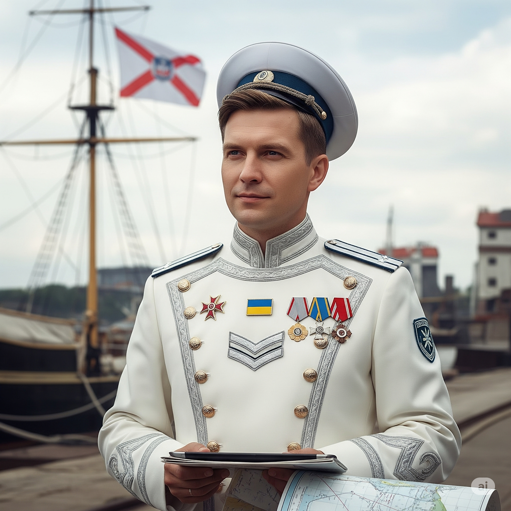
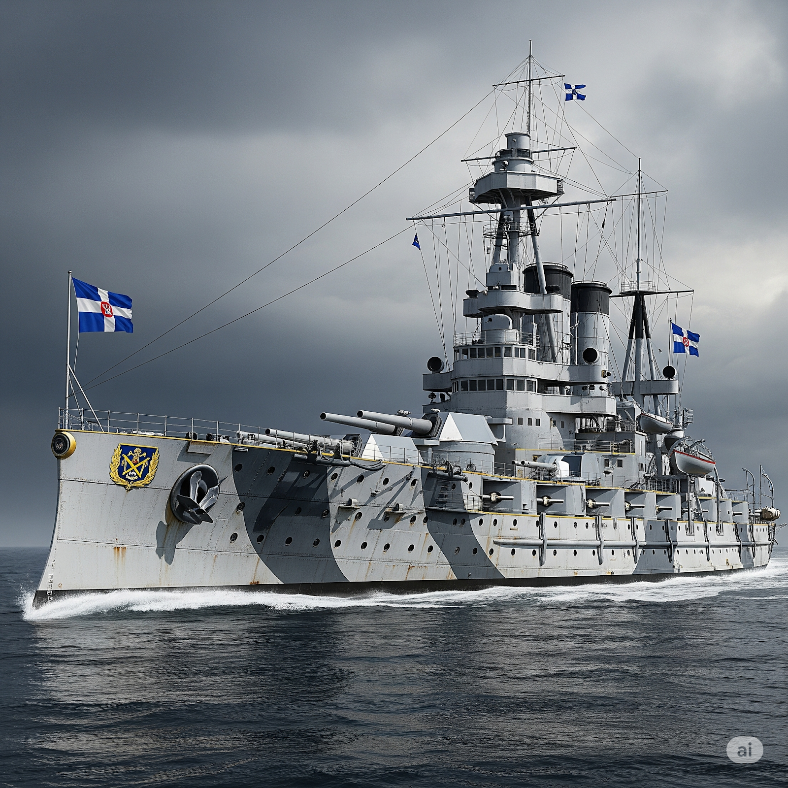
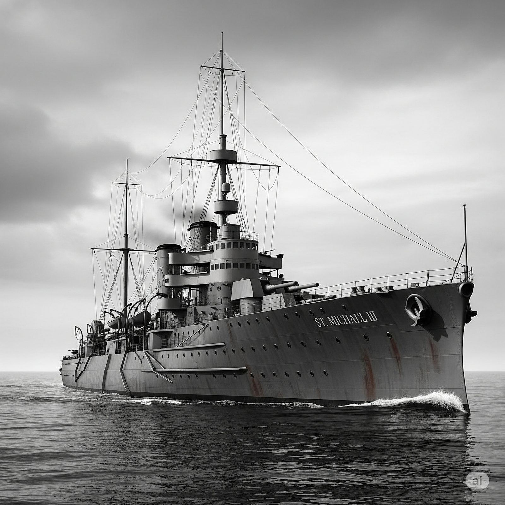

Адмірал флоту
Граф Ієронім де Вальберг фон Сіверн
(нар. 24 листопада 1967 року, Лозанна, Швейцарія)
«Я не стільки командую флотом, скільки спостерігаю за горизонтом — і кожного дня думаю: з чого почнеться наступний ранок».
Ранні роки
Народився в родині старовинного балтійсько-швейцарського дворянства. Батько викладав морську стратегію в Гамбурзі, мати була французькою художницею. Знає шість мов, включаючи латину.
Освіта та служба
Закінчив Військово-морську академію Скайндале (Нідерланди). Брав участь у миротворчих місіях. У 2025 році запрошений Князем Михайлом I для створення Морського Командування.
Створення Флоту
Сформував ВМФП на основі класичних традицій та принципах честі. Автор Морського Статуту та ініціатор проекту «Білі кораблі» — стратегії оборони без агресії.
Основний склад флоту

Лінкор "Лексендорф"
- Тип: Лінійний корабель
- Статус: Рендер затверджений у 1925 році
- Призначення: Флагман стратегічної оборони

Крейсер "Святий Михайло III"
- Тип: Легкий крейсер
- Клас: Михайло
- Вступив у стрій: 20 липня 1925 року
- Девіз: “Стріла з небес”